4.3 Using ODK Collect
Course Objectives
By the end of this section, you should be able to:
- Understand to setup ODK Collect for the first time
- Able to operate ODK Collect for field data collection activities
Learning Activities
Open Data Kit Collect (ODK Collect) is a data collection application on Android. ODK Collect can replace form survey from paper to digital. Therefore, this application will help the mapping and data collection activities in the field which also allow to save the location and photo information at once. You can download ODK Collect in the Google Playstore to start this section.
Initial Setup for ODK Collect
1. Set the URL Server
When you first time open ODK, you will be prompted to set the URL server for your ODK application. It can be URL server that pointed to your ODK Central, Kobo Toolbox, or Field Mapping Tasking Manager Server.
In ODK, you can set the URL Server by two ways, by using QR Code or by setup the server URL manually. We will explain how to setup either using QR Code or Manually Enter the project detail.
A. Using QR Code to Setup Project
- Select Configure with QR Code
- Click on the upper-right corner part to open Import QR Code button. This will import the QR code that you downloaded manually from your ODK Central, Kobo Toolbox, or FMTM server.
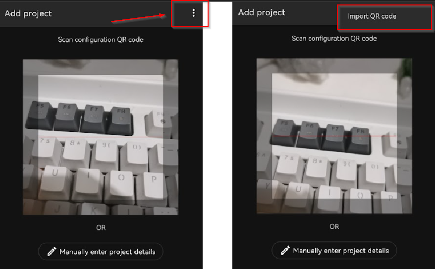
- Find QR Code images on your phone and select the QR image to start open the project
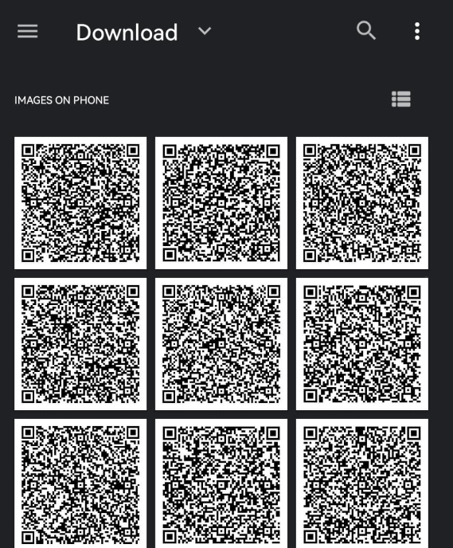
B. Manually Enter Project Details
- Select Manually Enter Project Detail
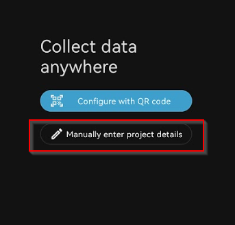
- Add the project by entering the URL Server (ODK Central, Kobo Toolbox, or FMTM URL), Username, and Password.
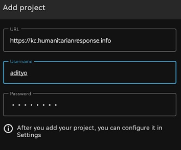
- Click Add if all the information already entered.
2. Set the Image Size (Optional)
In addition to the location point, you can also take a picture as additional information. If you will be collecting images as part of your data collection surveys, you can set the picture resolution as desired. But, the picture resolution will also affect the amount of your phone memory or file which will be uploaded to the server later. It is recommended that you choose the smallest resolution of the image during initial setup. You can follow this step:
- Click on the upper right corner of your project homepage
- Click on the Setting
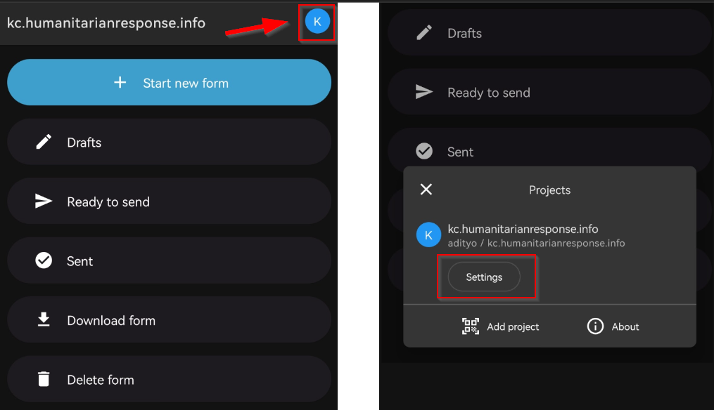
- In the Setting page, go to Form Management
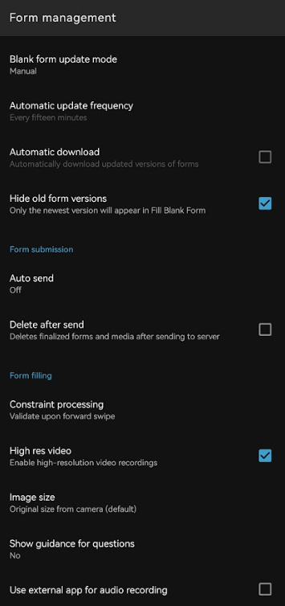
- In the Form Management, find Image Size and change into smaller size (by default it will set to the phone image size).
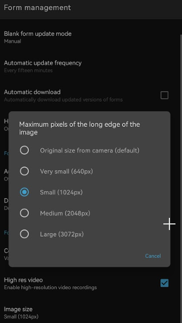
ODK Basic Operation
1. Get Blank Form from Server
Before you fill-out the form survey that you made before, you need to download the blank survey form from specified server. You can follow this step to take a blank survey from the server:
- At your project homepage, click on Download Form
- Wait few second until the ODK finish pulling the survey form from the server
- Select the form that you want to download and click Get Selected
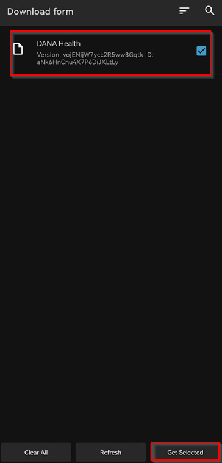
2. Fill the Survey Form
- To start filling out the survey, click on + Start new form
- Select the blank form that you want to filling out
- Enter all the information.
| Tips: |
|---|
| Questions that have a red star in the top left are required and you can not go to next question if the answer is empty. |
- Swipe to right or left on the screen to move the next/previous page. You can also press Next or Previous button to navigate to each question.
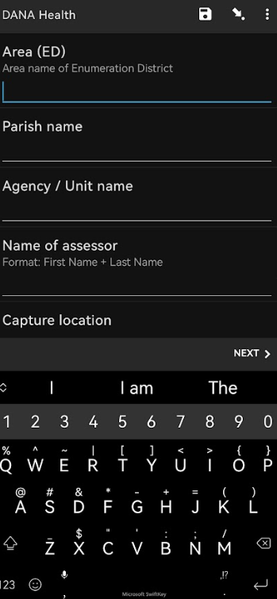
- At the end, press Save as draft if you still need to modify your form later or press Finalize if you already happy with the information you entered.
| Tips: |
|---|
| If you press Finalize, you won’t be able to modify the form later. It is better to Save as draft if you think you will modify some information before upload the submission to the server |
3. Edit Draft Form
If you mark your submission Save as draft, you still can edit it through this step:
- At your project homepage, press on Drafts
- Click on the form that you want to modify
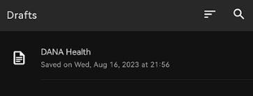
- Press on the question that you want to modify. You can also press Go To Start to start the form from the beginning, so you can review all your entered information.

- Press Finalize when you already finished modify your submission
4. Transferring Complete Form
After completing data collection, all forms will need to be transferred from the data collection device to a central storage location for data cleaning and processing.
A. Manual Download
If you do not have access to a server, forms can be manually downloaded from devices. To do so, plug the device into a computer.
- Go File Manager or File Explorer on your smartphone and open your internal storage. Then open ODK folder. This folder contains all the survey result file which stored on ODK Collect application. Then select the ‘instances’ folder which contains the files from the survey results.

- Copy the ‘instances’ folder to your computer. Rename the folder by date and surveyor.
B. Upload Survey Form to Server through ODK
After you fill and save the form, the next step is upload form survey to server. You can follow this step to upload form to server:
- At your project homepage, press Ready to Send
- Select forms that you want to upload, press Send Selected to start uploading your submission to the server
- All forms that have been successfully uploaded will be stored in **Sent **menu and the icon turn into cloud with checkmark.
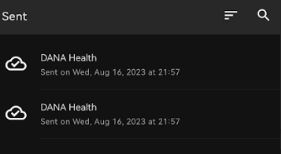
C. Upload the form to Google Drive
After you upload all the survey form to server, you may want to save and upload the survey result file in .zip format in Google Drive folder that was created by your mapping supervisor. This is the step:
- Go File Manager or File Explorer on your smartphone and open your internal storage. Then open ODK folder. This folder contains all the survey result file which stored on ODK Collect application. Then select the ‘instances’ folder which contains the files from the survey results.
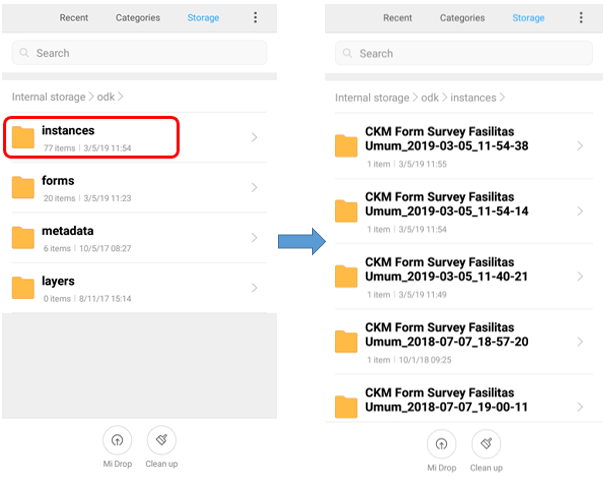
- Before you move instances folder to your computer, you need to convert the folder to .zip format by pressing the instances folder and select Compress. You can change the .zip file name.
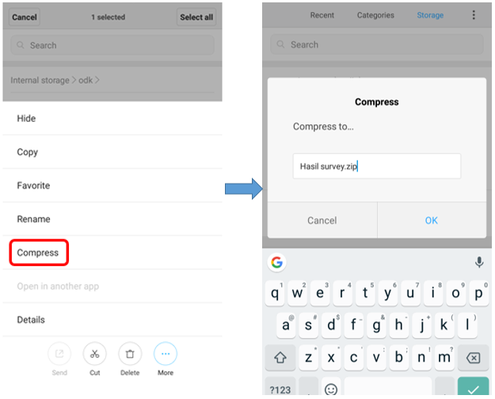
- After you move .zip file to your computer, you can upload the file to Google Drive that already set by your mapping supervisor.
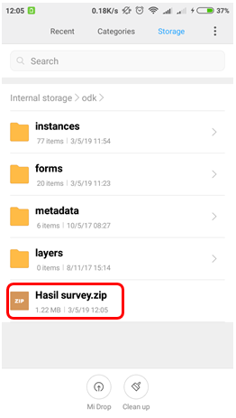
- You can upload the file to Survey Result folder (or another name that your mapping supervisor made) by click right on your mouse then choose Upload Files and choose the file that you want to upload.
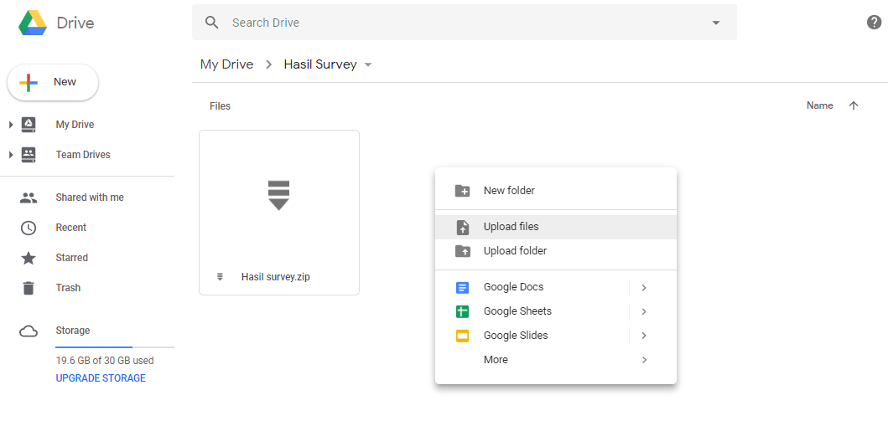
[Quiz] Check Your Knowledge
-
What is the step to setup ODK→ Ready to use for first time user?
a. Set project (through QR Code or Manual) → Get Blank Form
b. Set project (through QR Code) → Set Server URL → Set Image Size → Get Blank Form
c. Set Server URL → Press Fill Survey Form
c. Get Blank Form → Set the URL Server → Add Username and Password
-
If you press Finalize button at the end of your survey, you still be able to modify your form through Draft menu
a. True
b. False
-
To download manually, you need to connect your phone to your local PC and then find ODK folder → Instances
a. True
b. False
Answer: 1. A | 2. B | 3. B
Activity Checklist
By the end of this section, you should be able to:
- Operate ODK and perform initial setup
- Navigate through ODK to download the blank form and start using it
- Send the final form to the server or through alternative way (manual copy to local PC)